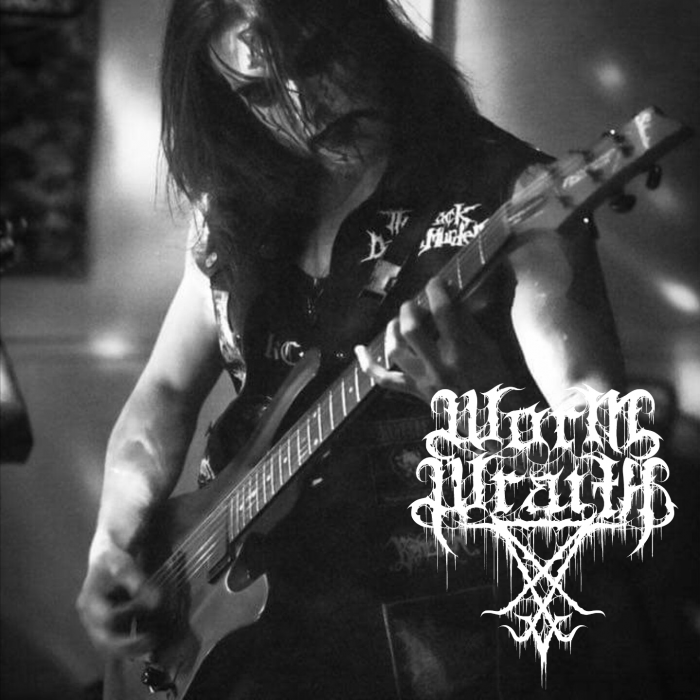

Interview: Worm Wraith
May 23, 2019
Why did you start making music and why did you chose this band name?
I started trying to make music somewhere around 2009 - 2010. Many of my early attempts to create projects failed or didn't last past a handful of gigs due to the inability to find like-minded musicians. Even since then, its been about creation and the love of extreme music. As the years have gone by, I've also discovered that creating is a way to share some of my most intense and overwhelming experiences and to give those experiences a voice. When the idea of Worm Wraith first came around, I was actually planning to work under the name Lunar Malediction. By the time I got around to actually releasing the first demo, I had changed my mind on many things about the project and my vision for it which included the themes and atmospheres I intended to invoke. Ever since black metal became my main focal point somewhere around 2014, I decided to use the pseudonym of Wormwood for the different projects I was involved under. I thought of the name Worm Wraith at some point and thought it would have been a good alternate pseudonym, but I was not going to change my pseudonym by any means. However, I really liked how well the name just flows off the tongue and it matched the themes of the project very well. Once I made that connection, I knew instantly that this was the name I would operate under.
When did you form your band?
I started working on the Worm Wraith material quite a while ago back in the end of 2014. I started the project with the intention of being a one man project as I had already had difficulties finding people to work with at the time to even play death metal (keep in mind I'm in Tampa, FL) and I figured if I had difficulties forming a complete death metal band in the death metal capital of the world, it would be near impossible for me to get a black metal band together. I continued to write in throughout 2015. However, in early to mid 2016, I coincidentally met the original lineup of what is now my main project, L.O.R.E. (Litany of Ruinous Entities) who were actually playing legitimate black metal with the same/very similar influences that I had. I was extremely busy at the time so once I had joined L.O.R.E., a lot of the material I was working on for WW ended up going into that project instead and I had kind of left the idea for WW behind at least for the time being. Once I had the ability to take on more musical projects, I decided I wanted to start WW up again so here we are at present day and the project finally has released some of the original material I wrote for it so long ago.
Who are your major influences?
I'm still pinpointing my exact sound and influences for this project as I'm influenced by such a wide spectrum of music. Currently, I'd say my biggest influences to date though are both Leviathan and Lurker of Chalice, Sargeist, Darkthrone, Xasthur, Void Meditation Cult, Black Cilice, etc.
Are you signed to any record label?
Worm Wraith is not currently working with any labels and honestly I am not very concerned with working with a label at the moment.
Do you play live? If so, do you have any gigs planned? Did you open for any well-known band?
No, Worm Wraith does not play live and probably never will. Simply because this music is very personal to me it would not feel right for session musicians to play what I write not knowing the context of where this music came from. However, L.O.R.E. has played with some pretty notable bands over the years including Inquisition, Kult ov Azazel, Wormreich, Fin, Woe, Dispirit, Blood Stained Dusk etc.
Could you briefly describe your music making process?
My music process tends to start with guitar as I primarily consider myself a guitarist. Usually, I slowly piece together riffs and once I have a segment of riffs that go together, drums come next. Followed by bass, then keys, lyrics/vocals. All while making any adjustments throughout the whole process down to when I start recording and finally the mixing/mastering phase. I tend to let everything come out naturally as I feel it is more genuine than if I forced material out of me.
What has been your biggest challenge as a band? Have you been able to overcome that challenge? If so, how?
My biggest challenge is just operating as a one man project. There are pros and cons to both operating independently, or with a full group of musicians. Its taken quite some time looking back to get where I am by self teaching myself guitar/bass, vocals, keys, etc. Even recording and mixing/mastering (although lo fi black metal isn't really that difficult to mix/master). My main difficulty instrument wise at the moment is drums and so that is the instrument I am spending a lot of time practicing to try and improve. I don't see any WW material having any gravity blasts or anything like that anytime soon. Being able to achieve what I have just as one person with zero help from anyone else is in a way overcoming the challenge itself. However, I do not plan on stopping here and I will continue to push myself with each release.
What is your ultimate direction for your band?
Worm Wraith's ultimate direction is still unfolding. I always see this project as being very heavily atmosphere and black metal based though. Honestly, it is more so about the themes and the message before the music. WW is and will continue to be based on my experiences with magick, psychology, and horror/abstract horror.
What advice would you give to musicians who want to start a black metal band?
Be genuine with your art and yourself. Be a leader. Don't be afraid to challenge yourself to do what is the absolute best for your music.
Did anyone support your project emotionally or financially?
There has certainly been many of my acquaintances who have supported WW. They know who they are. Financially, no. Everything I've done with all my instruments, building my studio, etc. has all been through my own finances. Although I would like to recognize those that have chosen to donate money when downloading the demo. All the money that is donated will go back into the project's future releases.
Logo made by Gragoth of Luciferium War Graphics (www.luciferiumwargraphics.com)
Photo taken by Heike Lopez